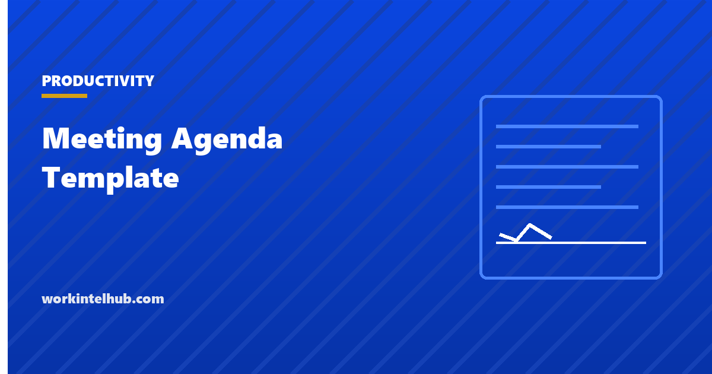

Meeting Agenda Template

A meeting agenda is a list of what the meeting is for, in what order, for how long, and who owns each part. Most meetings have one in name and none in practice: a title, a calendar slot and a hope. The research on meetings is unusually consistent about what that costs. Executives spend close to 23 hours a week in meetings, knowledge workers now average more than 21, and about a third of that time is spent in meetings the attendees themselves consider unnecessary. The agenda is the cheapest fix there is, and it works only when it is built a particular way.
The builder below produces a timed agenda with a stated purpose, an owner and an outcome for every item, and the decision and action log that turns talk into work. The rest of the page covers the five meeting types and how their agendas differ, the rules that make agendas work, and the numbers on what meetings cost.
Meeting agenda builder
Nothing typed here leaves your browser. The agenda times each item and totals them against the meeting length, and adds the decision log and action list that make the meeting worth having had.
What meetings cost, and why agendas matter
Harvard Business Review reported in 2017 that senior managers spend nearly 23 hours a week in meetings, up from under 10 in the 1960s, and that 65 per cent said meetings kept them from completing their own work. The Microsoft Work Trend Index found in 2025 that the average knowledge worker spends 21.5 hours a week in meetings, 60 per cent of them ad hoc, with interruptions arriving every two minutes through the working day. A 2022 survey of 632 workers by Steven Rogelberg and Otter.ai put the cost of unnecessary meetings at about $25,000 per professional employee per year, roughly a third of the $80,000 employers spend on each employee's meeting time.
The mechanism behind those figures is older. Rogelberg, Shanock and Scott (2012) found that the negative effect of a bad meeting does not end when it does: attendees carry it out, in what Rogelberg calls meeting recovery syndrome, and it depresses the work that follows. A meeting without a stated purpose, a decision to make or a time limit is the one most likely to produce that effect, which is what an agenda removes.
The site's productivity formula page treats meeting hours as an input, and the one-week productivity audit is where most teams first see how much of the week they consume.
Five meeting types and their agendas
| Type | Purpose line | Agenda shape | Length | Common failure |
|---|---|---|---|---|
| Decision | "We will have decided X" | Options with pre-read, discussion with a hard stop, decision, owner and date | 25 to 45 min | Debating the options that should have been in the pre-read |
| Status or review | "We will know where each workstream stands and what is blocked" | Exceptions only: what is off track, what needs a decision; the rest in writing | 15 to 25 min | Going round the table reading updates aloud |
| Planning | "We will have a plan for the next period with owners" | Goals, capacity, proposed work, conflicts, commitments | 45 to 90 min | Planning work without checking capacity first |
| Problem solving | "We will understand the cause of X and agree the next step" | Symptoms, data, causes, options, one next step | 45 min | Jumping to a fix before the cause is agreed |
| One-on-one | "You will have raised what you need and I will have given feedback" | Their items first, then yours, then development | 30 to 45 min | Becoming a status update |
The builder adjusts the opening for each type; the items are yours. For the last row, the one-on-one template has its own agenda and question bank, and for planning meetings the capacity planning guide supplies the numbers the agenda needs before anyone commits.
The rules that make an agenda work
- State the purpose as an outcome. "Discuss the hiring plan" is a topic. "Agree the Q4 hiring plan and who owns each requisition" is a purpose, and the meeting can be judged against it.
- Give every item an owner, a time and an outcome type. Decide, discuss or inform. Items marked "inform" belong in the pre-read, and a good agenda has few of them.
- Time the items and total them. The builder does this. An agenda that adds up to 70 minutes in a 45-minute slot has already told you what to cut.
- Send the pre-read 24 hours ahead and assume it was read. Do not present it. The time saved is where the discussion comes from.
- Invite only people who must attend. Everyone else gets the notes. Decision meetings work best with fewer than eight people in the room.
- Put the hardest item first. Attention is highest at the start and decisions made in the last five minutes are made badly.
- Close with a read-back. Decisions, actions, owners, dates, aloud. Five minutes reserved for it, every time.
- Send the notes within a day. To attendees and to anyone affected. A decision nobody wrote down was not made.
The rules that get skipped most are the second and the seventh. Untyped items drift into discussion with no end; skipped read-backs produce three versions of what was decided. Both are cheap to fix and the builder puts them on the page by default.
Recurring meetings and the ones to cancel
A recurring meeting needs a standing agenda and a periodic reason to exist. Every quarter, list the recurring meetings a team attends, with their hours per week multiplied by attendees, and ask of each: what decision or information does this produce that a document could not? Meetings that fail the question are cancelled or converted to a written update, which is what several large companies did during 2023 and 2024 with measurable gains in focus time. The status meeting is the usual casualty: its content is a report, and a report is faster to read than to hear.
The other lever is length. The default calendar slot is 30 or 60 minutes because the software offers them, not because meetings need them; 25 and 50 leave time to move between meetings and to write the notes, and 15 is enough for most status checks. The time blocking guide covers how to protect the hours that remain, and the focus blocks guide covers what to do when the calendar is not yours to change.
Key takeaways
- State the purpose as an outcome, give every item an owner, a time and a type (decide, discuss, inform), and total the times against the slot.
- Executives spend nearly 23 hours a week in meetings and knowledge workers over 21; about a third of that time is in meetings attendees call unnecessary, at roughly $25,000 per employee a year.
- Send the pre-read a day ahead and do not present it; invite only those who must attend; hardest item first.
- Reserve the last five minutes for reading back decisions and actions with owners and dates, then send the notes within a day.
- Review recurring meetings quarterly and convert status meetings to written updates.
- Use 15, 25 and 50-minute slots rather than the calendar defaults.
Frequently asked questions
What should a meeting agenda include?
The purpose stated as an outcome, the owner and note taker, the must-attend list, any pre-read, the items in order with an owner, a time and an outcome type for each, five minutes reserved for a read-back of decisions and actions, and space for the decision log, the action list with owners and dates, and parked items.
How long before a meeting should the agenda be sent?
At least 24 hours, with any pre-read. That is long enough for attendees to read it and to say the meeting is not needed or that they are the wrong person, and short enough that it is still fresh. Send the notes within 24 hours afterwards.
How many items should a meeting agenda have?
As many as the time allows once each is given a realistic duration. A 45-minute decision meeting usually holds two or three substantive items plus the open and close. If the totals exceed the slot, cut items rather than shrinking their times.
What is the difference between an agenda and meeting minutes?
The agenda is written before the meeting and says what it is for and how the time will be used. Minutes or notes are written during and after it and record what was decided, who owns each action and by when. The template on this page puts both on one document so the second gets written.
How much do meetings cost?
A 2022 survey by Steven Rogelberg and Otter.ai estimated employers spend about $80,000 per professional employee per year on meeting time, of which roughly $25,000 is in meetings the employees themselves consider unnecessary. To cost a single meeting, multiply each attendee's hourly cost by the length and add them.
Should every meeting have an agenda?
Every scheduled meeting, yes, even a short one: a one-line purpose and a time limit is an agenda. The exception is a genuinely ad hoc five-minute conversation, and the Microsoft data suggests those now make up 60 per cent of meetings, which is its own problem.